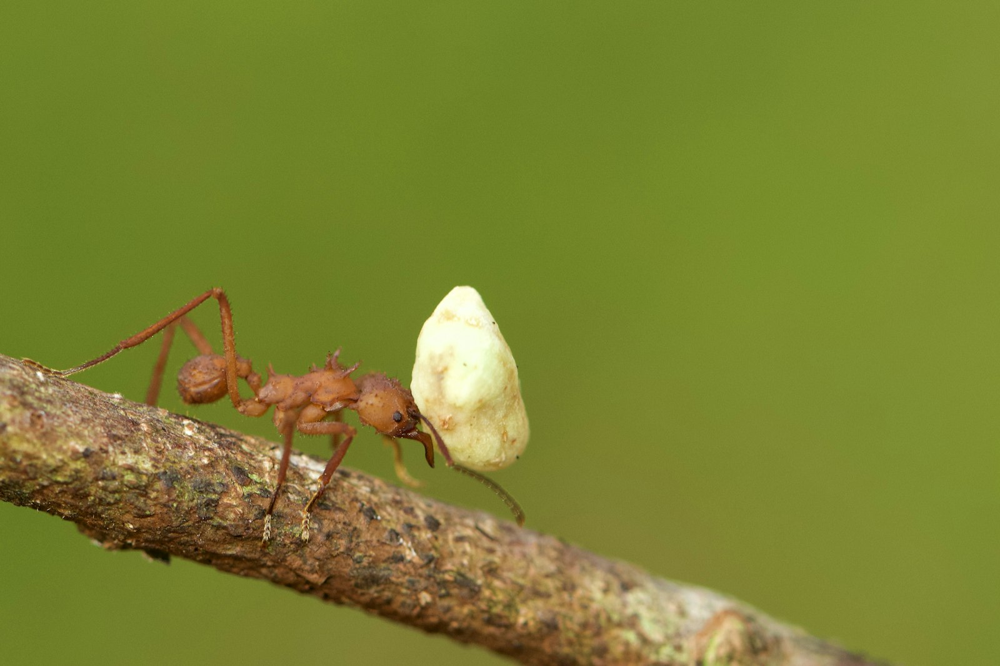
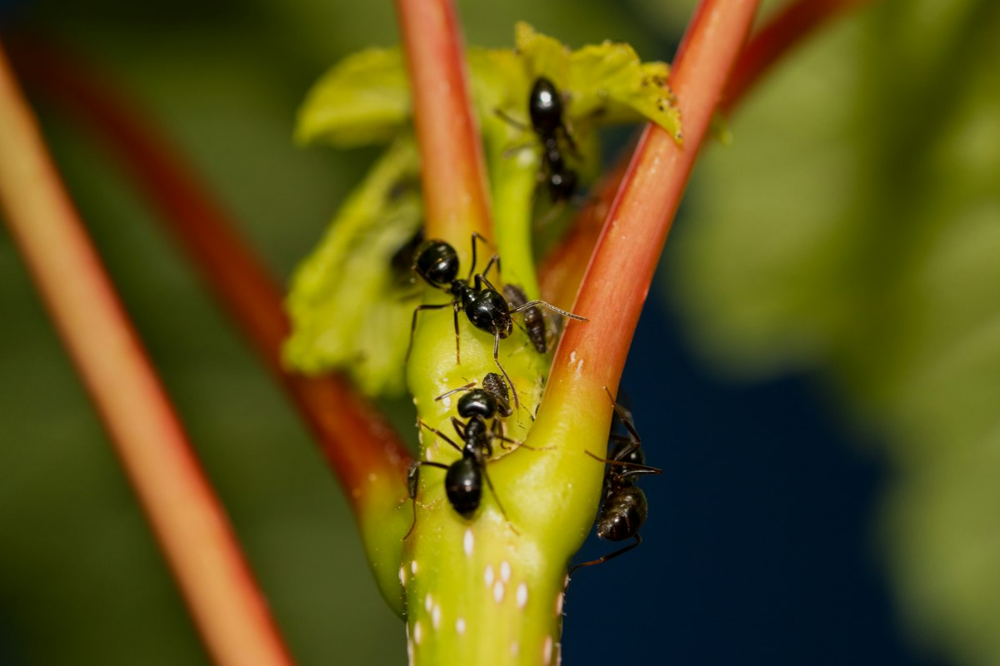
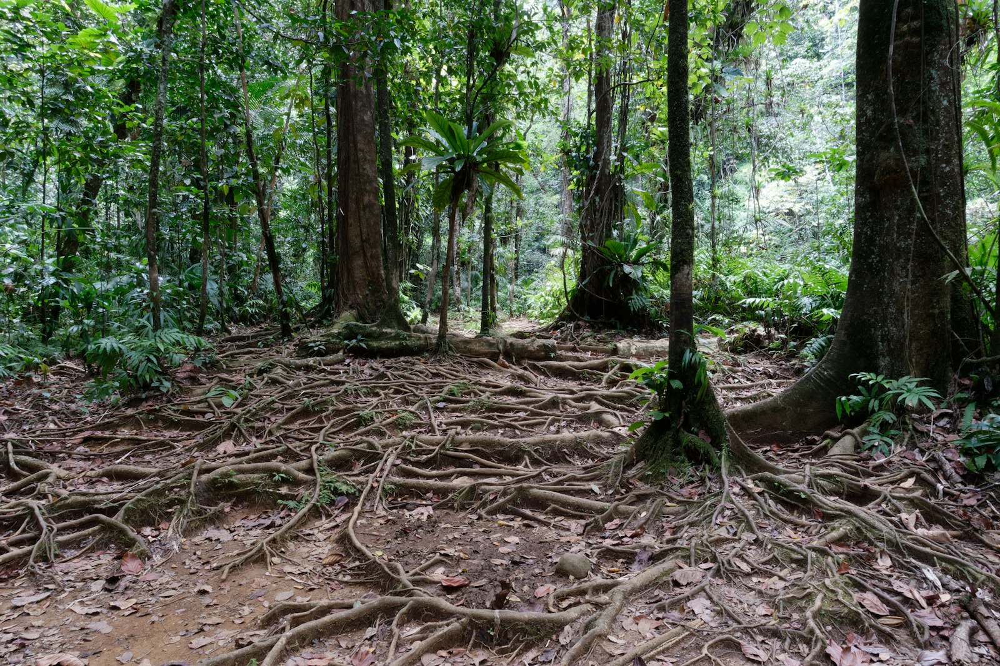

Amazon Field Guide · Wildlife No. 05
Leafcutter Ant: The Amazon’s Tiny Fungus Farmers
Watch the forest floor and you may see a green river of leaf scraps marching home. Those ants are not eating salad—they are running a 50-million-year-old underground farm.

If you could shrink to ant size and follow one of those leaf-bearing highways, you would arrive at a city. Leafcutter ants in the genera Atta and Acromyrmex—about fifty species from the southern United States to Argentina—build nests with hundreds of chambers under mounded entrances. The biggest colonies pack up to eight million individuals and can sprawl across an area the size of a sports field.
Workers live one to three years. Queens may live up to thirty. That long reign matters because a colony is a family business centred on one precious crop: a fungus called Leucoagaricus gongylophorus. The ants do not eat the leaves they cut. They chop greenery into mulch, feed it to the fungus, and then eat the fungus. Humans invented farming thousands of years ago. Leafcutters have been at it for roughly fifty million.
A city with job titles
Colonies run on castes—different body sizes for different jobs. Huge majors clear trails and defend the nest. Mid-sized mediae snip and haul leaves. Smaller minors guard highways from parasitic flies that try to lay eggs on workers. Tiny minims tend the fungus gardens and babysit brood. It looks chaotic from above; underground it is a timetable of specialised labour.
Foragers may harvest from hundreds of plant species and can remove up to about 17 percent of a forest’s leaf production in their territory. That sounds destructive, yet the ants are also ecosystem engineers. Tunnels aerate soil. Waste chambers become fertiliser. Nest openings create microhabitats for other creatures. Leaf pruning shapes which plants win light gaps. The green rivers on the forest floor are part of how the Amazon recycles itself.
“A young queen founds her farm with a mouthful of fungus—the starter culture for a colony that may last decades.”
Farmers with antibiotics
Fungus gardens face weeds of their own. A parasitic mould called Escovopsis can wreck crops. Leafcutters fight back with living medicine: bacteria on their bodies secrete antibiotics that target the invaders. They weed gardens carefully and avoid overusing their chemical tools—a lesson in sustainable farming written in six legs.
When forests stay connected and pesticides stay scarce, these ancient agriculturalists keep soils stirring and nutrients moving. Lose the mosaic of trees, or soak the edges in farm chemicals, and even a million-strong city can starve or poison its own garden. The ants’ survival is tied to the rainforest’s patchwork health—and so, in a quieter way, is ours.
How leafcutter fungus farming works
- Scout and snip. Foragers select leaves from many plant species, cut coin-sized fragments, and form trails back to the nest.
- Mulch the garden. Inside, workers chew fragments into a soft compost and pack it into fungus chambers—fuel, not food.
- Tend and weed. Minims groom the crop, remove mould, and apply antibiotic bacteria from their bodies to fight Escovopsis.
- Harvest the fungus. Larvae and queens eat special fungal tips called gongylidia; workers maintain the partnership that feeds the whole city.
Five things that make leafcutter ants survivors
- Different body sizes, called castes, assign soldiers, haulers, guards, and gardeners so one colony can do many jobs at once.
- A specialised fungus crop turns tough leaves into digestible food no single ant could process alone.
- Body bacteria produce targeted antibiotics that protect gardens without reckless overuse.
- Deep nest architecture stores gardens, waste, and nurseries while aerating surrounding soil.
- Flexible foraging across hundreds of plants helps colonies adapt when forest edges and plant lists change.

Trouble ahead—and reasons to hope
Amazon clearing erases foraging grounds and nesting sites, shrinking colonies and changing trail behaviour. Along forest edges, nest densities sometimes spike, tipping ants into pest status on crops and pastures. Farmers respond with pesticides that can poison colonies, wreck fungal gardens, and harm the helpful bacteria and soil life around them.
Pollution and chemical runoff travel farther than the spray nozzle. Stressed gardens become easier targets for parasitic fungi. Fragmented landscapes leave ants stuck between “ecosystem engineer” and “agricultural enemy,” depending on whether the mosaic still includes enough wild forest to absorb their appetite.
Hope sits in resilience and smarter land use. Leafcutters often adapt foraging and tunnelling in secondary and recovering forests when corridors remain. Limiting pesticide use, protecting forest patches, and encouraging diversified farms reduce conflict. Treat the ants as partners in nutrient cycling rather than only as pests, and these ancient farmers can keep turning leaf scraps into soil wealth—one green parade at a time.

Odd facts
Word bank
- Caste
- — a group of colony members with a specialised body shape and job.
- Ecosystem engineer
- — a species that changes habitats in ways that help many others.
- Fungus garden
- — the underground crop of fungus grown on chewed leaf mulch.
- Mutualism
- — a partnership where both species benefit (ants and fungus).
- Antibiotic
- — a chemical that kills or stops harmful microbes.
- Biomass
- — the total mass of living plant or animal material in an area.